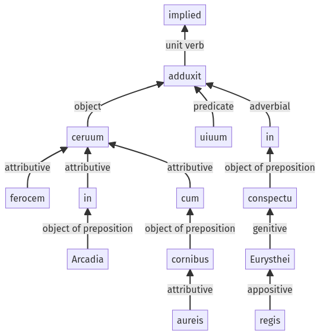

Hyginus, Fabulae, 30pr.5.1-30pr.5.13a
30pr.4.1-30pr.4.3a | 30pr.6.1-30pr.6.12a
Sentence 420
30pr.5.1-30pr.5.13a
ceruum ferocem in Arcadia cum cornibus aureis uiuum in conspectu Eurysthei regis adduxit.
1 ceruum ferocem in Arcadia cum cornibus aureis uiuum in conspectu Eurysthei regis adduxit
ceruum ferocem in Arcadia cum cornibus aureis uiuum in conspectu Eurysthei regis adduxit.
Highlighting:
- connecting words
- unit verb
- subject
- object
Color code:
- independent clause (level 1, transitive verb)
